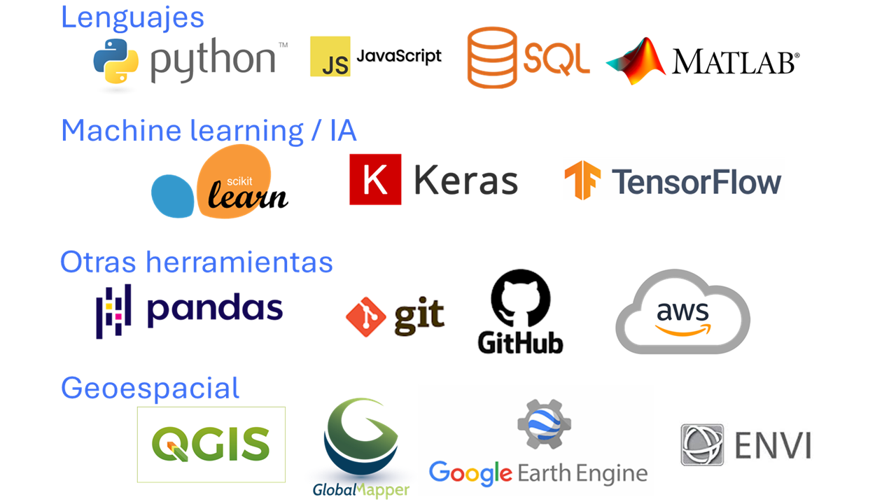

Hola, soy José
Remote Sensing Analyst
& Data Scientist
Contáctame
Conóceme
José Estévez, Ph.D
Soy científico de datos con doctorado en Teledetección por la Universidad de Valencia. Diseño modelos de Machine Learning aplicados a imágenes de satélite y datos geoespaciales para el estudio y monitoreo ambiental. Implemento soluciones escalables en cloud computing que potencian el uso de datos y la inteligencia artificial en la toma de decisiones.
Habilidades
Estas son algunas de las herramientas y tecnologías que utilizo en mis proyectos de ciencia de datos y análisis geoespacial.

Proyectos
Publicaciones
Gaussian processes retrieval of LAI from Sentinel-2 top-of-atmosphere radiance data
ISPRS Journal of Photogrammetry and Remote Sensing, 2020
Top-of-Atmosphere Retrieval of Multiple Crop Traits Using Variational Heteroscedastic Gaussian Processes within a Hybrid Workflow
Remote Sensing (MDPI), 2021
Gaussian processes retrieval of crop traits in Google Earth Engine based on Sentinel-2 top-of-atmosphere data
Remote Sensing of Environment, 2022
Ver más publicaciones en mi ORCID profile.